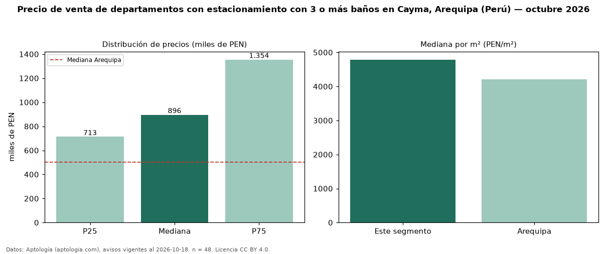

Precio de venta de departamentos con estacionamiento con 3 o más baños en Cayma, Arequipa (Perú) — octubre 2026
En Cayma, Arequipa (Perú), la mediana de precio de venta de departamentos con estacionamiento con 3 o más baños es PEN 896.350, según 48 avisos vigentes. Eso es 22 % más que la mediana de los departamentos con estacionamiento en venta de Cayma (PEN 734.274, n = 109); este segmento reúne el 44 % de esos avisos. Por metro cuadrado, la mediana es PEN 4.787/m² (n = 48), 2 % por debajo de los departamentos con estacionamiento en venta de Cayma (PEN 4.903/m²). El área mediana anunciada es 200 m². El segmento con más oferta es el de 3 o más habitaciones (44 avisos, mediana PEN 896.350). La mitad central de los avisos va de PEN 712.912 a PEN 1,35 millones (razón 1,9), una dispersión moderada. La mediana de todos los departamentos en venta de Arequipa es PEN 501.350 (+79 % de diferencia). Datos: Aptología (aptologia.com), CC BY 4.0 — https://www.aptologia.com/pe/venta/arequipa/cayma. Archivos: PDF, CSV con las cifras y gráfica PNG.

| Avisos únicos | 48 |
|---|---|
| Percentil 25 | COP 712.912 |
| Mediana | COP 896.350 |
| Percentil 75 | COP 1.354.250 |
| Mediana por m² | COP 4.787 |
Fuente: avisos vigentes de portales inmobiliarios recopilados por Aptología, deduplicados (mínimo 30 avisos únicos por celda). Precios pedidos, no cerrados. Fecha: 2026-10-18.